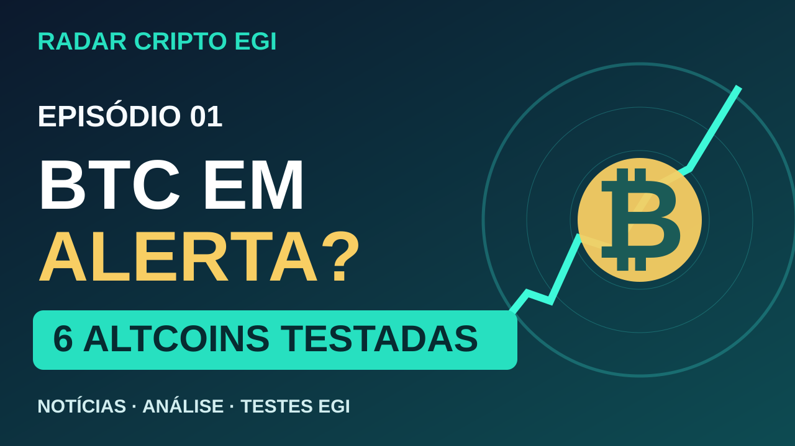

01
Manual Mestre
Identidade do canal, tutorial GitHub, publicação de conteúdos, privacidade, histórico e recuperação do projeto.
Abrir apostila ↗ Salvar HTML Backup completo ZIP ↗Bitcoin, altcoins, notícias e testes EGI com critérios, candles fechados e resultados que podem ser conferidos. Sem promessas de lucro.
Acompanhe as publicações por RSS e preserve o histórico do projeto em uma apostila HTML, com instruções, backups e caderno de evolução.
Identidade do canal, tutorial GitHub, publicação de conteúdos, privacidade, histórico e recuperação do projeto.
Abrir apostila ↗ Salvar HTML Backup completo ZIP ↗O feed RSS pode ser seguido por leitores de notícias. As novas publicações precisam ser incluídas manualmente no feed.
Abrir RSS ↗Convide outras pessoas para acompanhar os estudos e os resultados, sem promessas de lucro.
O kit de produção do episódio 01 está pronto para gravação, com teleprompter e textos de divulgação. O vídeo ainda NÃO foi publicado no YouTube.

Episódio 01 · Kit de produção pronto
Estudo com dados históricos reais dos nossos relatórios.
Kit de gravação V1.4 ↗ Roteiro anterior ↗📊 Radar BTC — tendência, suporte, resistência e dominância.
🔎 Moeda da vez — altcoins que resistem ou enfraquecem frente ao BTC.
🧪 Laboratório EGI — mostrar os resultados, inclusive as falhas.
As notícias serão publicadas com data, fonte e link original depois de verificadas. Não há notícias automáticas nem manchetes sem comprovação.
Aguardando as primeiras notícias verificadas.
Fotografia de 30/10/2026 às 18h44min59s (BRT), Binance Spot, candles de 15 minutos. Retornos direcionais após 3 candles, conforme RelEGI V1.8 (2). Não são preços atuais nem resultados de operações executadas.
| Ativo | Hipótese | Score | Preço-base USDT | Resultado +3 | +6 / +12 |
|---|
Os resultados são retrospectivos, sem custos, spread, stop ou execução. +6 e +12 estavam pendentes no registro usado. Mesmo pontuações altas podem falhar. Estudo, não ordem.
Data, candle fechado, ativo, direção e critérios utilizados.
Resultados posteriores, falhas e dados que permanecerem indisponíveis.
Auditar o método e melhorar o processo, sem promessas de retorno.
O canal oficial do WhatsApp já está disponível para acompanhar as novidades. Telegram e YouTube serão vinculados quando seus endereços forem confirmados. Sem cadastro por e-mail ou formulário de telefone nesta página.
Notícias, novos vídeos e resumos das auditorias EGI, separados dos alertas privados de trading.
Publicações em canal de atualizações, sem grupo de conversa ou lista de números cadastrados pelo portal.
No WhatsApp, as notificações de canais costumam vir silenciadas; o seguidor pode ativá-las no aplicativo.
Vídeos e análises do Radar Cripto EGI.
Alternativa para leitores de notícias, sem cadastro.
Seguir atualizações por RSS ↗Rascunhos e resultados para conferência antes da publicação.
Abrir Painel Editorial ↗O WhatsApp já está vinculado ao endereço oficial informado. Telegram e YouTube serão ativados somente com URLs confirmadas. Seguir um canal não garante notificação de cada atualização; esta Central não envia mensagens automaticamente.
Nossa mensagem de responsabilidade, presente nas publicações e nos vídeos do Radar Cripto EGI.
Aviso editorial: um texto de responsabilidade não elimina os riscos do mercado nem substitui informações claras sobre perdas, custos e resultados dos testes.